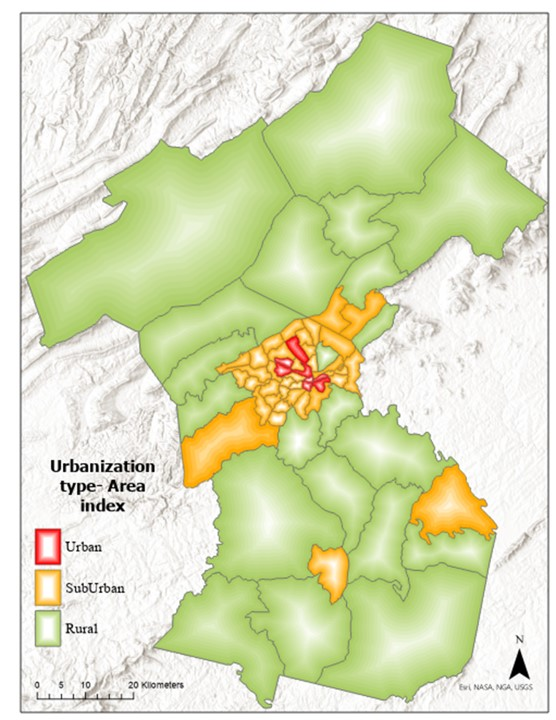

Exploring the Relationship Between Income and Living Location Preference
A Comparative Analysis of Linear and Non-Linear Regression Models
research
code
analysis
plot
Author
Heba Nusair
Published
November 10, 2023
Introduction
Living in Roanoke: Does Your Income Decide Your Address? We’ve dived into the world of Roanoke’s remote workers to see how much their earnings influence where they live. Using linear regression, we’ve connected the dots between income and neighborhood choices in this vibrant metropolitan area. Check out our eye-opening findings in the figure below! (See the figure).

The urban areas classification in Roanoke Metropolitan Area produced by the author.
The Study at a Glance
Our dataset included responses from individuals, detailing their income levels and their preferred living areas, ranging from the bustling city center to the tranquil rural landscapes. We analyzed responses detailing income levels and preferred living areas, from busy city centers to peaceful rural settings. Our unique “relocating index” helped us turn these preferences into measurable data. So again, the variables used are processed as the following:
Transforming income into a continuous scale, assigning monetary values to income brackets.
Converting living area preferences into a single, ordinal dependent variable ‘Living Location Preference: moving from urban to rural index’.
Insights from Linear Regression Analysis
Employing linear regression to model the relationship between the two variables: income & Relocating index.
Code
import pandas as pdimport numpy as npfrom sklearn.model_selection import train_test_splitfrom sklearn.preprocessing import StandardScalerfrom sklearn.linear_model import LinearRegressionfrom sklearn.metrics import mean_squared_error, r2_scoreimport matplotlib.pyplot as plt# Load the datasetdata = pd.read_excel('Income_LivingLocationPrefrences.xlsx')# Handle NaN valuesdata.dropna(subset=['City_center', 'Urban_area', 'Suburban_area', 'Rural_area', 'Monthly_income'], inplace=True)# Convert the Location preferences into a single ordinal dependent variablearea_to_number = {'City_center': 1, 'Urban_area': 2, 'Suburban_area': 3, 'Rural_area': 4}data['living_Location_preference'] = data[['City_center', 'Urban_area', 'Suburban_area', 'Rural_area']].idxmin(axis=1).map(area_to_number)# Convert income to a continuous scale based on the provided income bracketsincome_mapping = {1.0: 625, 2.0: 2292, 3.0: 5000, 4.0: 6666}data['continuous_income'] = data['Monthly_income'].map(income_mapping)# Scale the income featurescaler = StandardScaler()data['scaled_income'] = scaler.fit_transform(data[['continuous_income']])# Prepare the features and target variable for modelingX = data[['scaled_income']]y = data['living_Location_preference']# Split the data into training and testing setsX_train, X_test, y_train, y_test = train_test_split(X, y, test_size=0.2, random_state=42)# Create and train the linear regression modelmodel = LinearRegression()model.fit(X_train, y_train)# Predict on the test datay_pred = model.predict(X_test)# Evaluate the model's performancemse = mean_squared_error(y_test, y_pred)r2 = r2_score(y_test, y_pred)# Output the performance metricsprint(f'Mean Squared Error: {mse}')print(f'R-squared: {r2}')# Debugging the sizes of arraysprint("Sizes of arrays for plotting:")print("X_test['scaled_income']: ", len(X_test['scaled_income']))print("y_test: ", len(y_test))print("y_pred: ", len(y_pred))# Plottingplt.scatter(X_test['scaled_income'].values, y_test.values, color='black', label='Actual Data')plt.scatter(X_test['scaled_income'].values, y_pred, color='red', label='Predicted Data', alpha=0.5)# Optionally, create a more continuous line for predictionssorted_order = np.argsort(X_test['scaled_income'].values)plt.plot(X_test['scaled_income'].values[sorted_order], y_pred[sorted_order], color='blue', linewidth=2, label='Regression Line')plt.xlabel('Monthly income')plt.ylabel('Living Location Preference:Relocating index_From urban to rural')plt.title('Income vs Living Location Preference Linear Regression')plt.legend()plt.show()
Mean Squared Error: 1.2658068009077692
R-squared: 0.006851215790502296
Sizes of arrays for plotting:
X_test['scaled_income']: 162
y_test: 162
y_pred: 162
In this plot, the actual data points (black dots) showed significant deviation from the blue regression line (the model’s predictions). The red dots, representing the model’s predicted values, also varied widely from many actual data points, indicating a mismatch between the model’s predictions and the real data.
Unveiling the Linear Regression Insights for WFH Workers
Our linear regression model yielded the following insights:
Mean Squared Error (MSE): The model showed an MSE of 1.2658068009077692. This number, though not extremely high, indicates some discrepancies between the model’s predictions and the actual data.
R-squared Value: We obtained an R-squared value of 0.006851215790502296. This low value suggests that our model might not be capturing the complete picture, especially in the context of WFH employees.
Transitioning to Non-Linear Models
The visual and numerical analysis led us to consider that the relationship between income and living area preferences might not be linear. This prompted a shift towards exploring non-linear patterns, We Chose a Multinomial Logistic Regression!!!! for these key reasons:
Appropriate for Ordinal Data: Our data on living location preferences is ordinal (ranging from city centers to rural areas). Ordinal regression accurately handles such data, unlike linear regression.
Captures Non-Linear Patterns: This model is better suited to reveal non-linear relationships between income and living location preferences, which our initial analysis suggested.
Enhanced Predictive Accuracy: Ordinal regression aligns more closely with our real-world data, potentially offering improved accuracy in predictions.
In this analysis. the location preferences into a single variable suggests that the resulting data is ordinal in nature. Here’s why:
The values assigned (1 for ‘City_center’, 2 for ‘Urban_area’, 3 for ‘Suburban_area’, and 4 for ‘Rural_area’) imply an order or ranking.
The order seems to represent a gradient from the most urbanized area (‘City_center’) to the least (‘Rural_area’).
Given this structure, the variable ‘preference rank’ would be more appropriate for ordinal regression analysis since it reflects a clear order or hierarchy in the data.
Code
import pandas as pdimport statsmodels.api as smfrom sklearn.model_selection import train_test_split# Load the datasetdata = pd.read_excel('Income_LivingLocation_GradientBoostingRegressor.xlsx') # Update the path to your file# Combine the area preferences into a single ordinal variabledef get_preference_rank(row):if row['City_center'] ==1:return1elif row['Urban_area'] ==1:return2elif row['Suburban_area'] ==1:return3elif row['Rural_area'] ==1:return4data['living_area_preference'] = data.apply(get_preference_rank, axis=1)# Prepare the features and the target variableX = data[['Monthly_income', 'Education_Level', 'House_owner_or_renter', 'number of employees in household']]y = data['living_area_preference']# Add a constant to the model (intercept)X = sm.add_constant(X)# Split the data into training and testing setsX_train, X_test, y_train, y_test = train_test_split(X, y, test_size=0.2, random_state=42)# Fit the ordinal regression modelmodel = sm.MNLogit(y_train, X_train)result = model.fit()# Output the model summaryprint(result.summary())
The Multinomial Logistic Regression analysis revealed some interesting insights about the relationship between various factors and living area preferences:
Model Convergence and Fit: The model successfully converged after 5 iterations, indicating a reliable fit to the data. The Pseudo R-squared value of 0.03553, while modest, suggests that our model has some explanatory power, though other unaccounted factors might also play a significant role.
Significant Predictors:
Monthly Income: This was a significant predictor across all living area preferences (2, 3, and 4). The negative coefficients (-0.6509, -0.7957, and -0.5330) indicate that as monthly income increases, the likelihood of preferring urban (2) or suburban (3) areas over rural (4) areas decreases.
House Ownership Status: This variable also showed significance in influencing living area preference, with negative coefficients suggesting that those who own houses or are renters are less likely to prefer urban or suburban areas compared to rural ones.
Other Factors:
Education Level: While the coefficients were positive, suggesting a higher likelihood of preferring urban or suburban areas with increased education level, the significance was marginal.
Number of Employees in Household: This factor did not show a strong influence on living area preference, as indicated by the higher p-values.
Coefficient Interpretation: The coefficients for each predictor vary for different living area preferences, reflecting the complex nature of these relationships. For instance, the impact of monthly income is more pronounced in preferring suburban areas (living_area_preference=3) than in urban or rural areas.
In conclusion, our Multinomial Logistic Regression model sheds light on how factors like income and house ownership status significantly influence living area preferences among WFH workers. The nuanced differences in coefficients across different living areas underscore the complexity of these relationships.